1. Общие положения
2. Структура памяти ЭВМ
3. Способы организации памяти
4. Структура адресных ЗУ
5. Элементы ЗУ с произвольным обращением
6. Постоянное ЗУ (ПЗУ, ППЗУ)
7. Флеш-память
Памятью ЭВМ называют совокупность устройств, служащих для запоминания, хранения и выдачи информации. Отдельные устройства, входящие в эту совокупность, называются запоминающими устройствами или памятями того или иного типа. В настоящее время и ЗУ, и память стали практически синонимами.
Производительность ЭВМ и ее возможности в большой степени зависят от характеристик ЗУ, причем в любой ЭВМ общего назначения используют несколько типов ЗУ.
Основные операции:
Обе этих операции называются в общем случае обращением к памяти.
При обращении к памяти происходит считывание или запись некоторой единицы данных, различной для устройств разного типа. Такой единицей может быть байт, машинное слово, блок данных.
Коротко рассмотрим важнейшие характеристики ЗУ – емкость, удельную емкость, быстродействие, которые характерны для любых типов ЗУ, а также некоторые методы их классификации.
Емкость памяти определяется максимальным количеством данных, которые могут в ней храниться одновременно. Емкость измеряется в битах, байтах, машинных словах (об этом говорилось в самом начале курса). Используют обычно более крупные единицы измерения: 1К = 1024 (Кбит, Кбайт, Кслов), 1024 Кбайт = 1 Мбайт, 1024 Мбайт = 1 Гбайт.
Удельная емкость определяется как отношение емкости ЗУ к его физическому объему и характеризует степень технологического совершенства ЗУ.
Удельная стоимость определяется как отношение стоимости ЗУ к его емкости и определяет, помимо технологического совершенства конкурентоспособность изделия на рынке.
Быстродействие памяти определяет продолжительность операции обращения и делится на:
время обращения при считывании
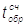
. Это время, необходимое на поиск нужной единицы информации и ее считывание;время обращения при записи . Это время, необходимое для поиска места для хранения данной единицы информации и ее запись в память.
В некоторых устройствах памяти считывание информации сопровождается ее разрушением (стиранием). В этом случае цикл обращения к ЗУ при считывании должен содержать операцию регенерации считываемой информации на прежнем месте в памяти. В ряде случаев ЗУ требуют перед началом записи привести запоминающие элементы в некоторое начальное состояние. В этом случае цикл обращения к ЗУ при записи должен содержать операции подготовки запоминающих элементов к самой операции записи.
В общем случае продолжительность цикла обращения к памяти при считывании состоит из следующих компонент:
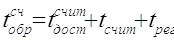
,где – время доступа при считывании – интервал времени между началом операции обращения при считывании и моментом, когда доступ к данной единице информации стал возможен;
– продолжительность самого физического процесса считывания, т.е. процесса обнаружения и фиксации состояния соответствующих запоминающих элементов или участков поверхности носителя;
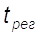
– время на восстановление разрушенной при считывании информации. В ЗУ без разрушения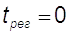
.Продолжительность цикла обращения к памяти при записи информации в общем случае состоит из следующих компонент:
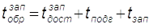
,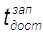
– время доступа при записи – интервал времени от начала обращения до момента, когда становится возможен доступ к запоминающему элементу или участку поверхности носителя, в который производится запись;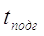
– интервал времени, необходимый для приведения в исходное состояние запоминающих элементов или участков поверхности носителя для записи данной единицы информации;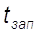
– продолжительность самого физического процесса записи, т.е. время для изменения физического состояния запоминающих элементов или участка поверхности носителя.В большинстве случаев
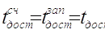
.В качестве продолжительности цикла обращения к памяти принимается величина
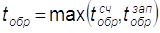
.Следует иметь в виду, что для хранения информации в ЭВМ используются устройства памяти, построенные на разных принципах действия и имеющие разнообразнейшие технические и конструктивные реализации. Кроме того, все они являются сложнейшими электронными устройствами. Поэтому устройства памяти обладают многочисленными характеристиками, по каждой из которых можно производить классификацию устройств. Ниже будут рассмотрены только основные критерии, по которым принято квалифицировать ЗУ, а именно: по принципу действия, по реализации в памяти операций обращения, по способу доступа к хранимой информации.
1.Принцип действия. По этому признаку основные типы ЗУ, наиболее широко используемые в современных ЭВМ, делятся на:
В качестве внутренней памяти ЭВМ в абсолютном большинстве случаев используются электронные ЗУ на полупроводниковых элементах. В редких случаях в специализированных управляющих ЭВМ используются ЗУ с неподвижными магнитными запоминающими элементами. Остальные типы устройств используются в качестве внешних памятей ЭВМ. Более подробно эти устройства рассматриваются в отдельном курсе "Периферийные устройства ЭВМ".
В настоящее время разрабатываются и исследуются многочисленные "нетрадиционные" ЗУ, а именно: ЗУ на приборах с зарядовой связью, акустоэлектронные ЗУ, пьезоэлектронные ЗУ, магнитоэлектронные ЗУ и т.д.
2. Способ реализации в памяти операций обращения. По этому признаку различают:
3. Способ организации доступа. По этому признаку различают ЗУ с непосредственным (произвольным), с прямым (циклическим) и последовательным доступом.
Непосредственный (произвольный) доступ. В ЗУ этого типа время доступа, а поэтому и цикл обращения не зависят от места расположения элемента памяти, с которого производится считывание или в который записывается информация. В большинстве случаев это электронные ЗУ, в которых непосредственный доступ реализуется с помощью электронных логических схем. В ЗУ с произвольным доступом цикл обращения составляет от 1-2 мкс до единиц наносекунд.
Независимость
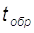
от положения запоминающего элемента в запоминающем массиве имеет место только до определенной частоты обращений процессора к ЗУ. При увеличении частоты обращений до единиц наносекунд начинает сказываться геометрическое положение запоминающего элемента в массиве. Это обусловлено, прежде всего, конечной скоростью распространения электрического сигнала в изолированном проводнике, которая составляет примерно 60 % от скорости света.Число разрядов , считываемых или записываемых в память с произвольным доступом параллельно во времени за одну операцию обращения, называется шириной выборки
В других типах ЗУ используют более медленные электромеханические процессы, поэтому и цикл обращения больше.
Прямой (циклический) доступ. К ЗУ этого типа относятся устройства на магнитных, оптических и магнитооптических дисках, а также на магнитных барабанах (последние в настоящее время используются очень редко). Благодаря непрерывному вращению носителя информации возможность обращения к некоторому участку носителя для считывания или записи циклически повторяется. В таких ЗУ время доступа составляет обычно от долей секунды до единиц миллисекунды.
Последовательный доступ. К ЗУ этого типа относятся устройства на магнитных лентах. В процессе доступа производится последовательный просмотр участков носителя информации, пока нужный участок не займет некоторое исходное положение. Время доступа в худшем случае составляет минуты, поскольку магнитофон будет вынужден осуществить перемотку всей кассеты.
Классическая пятиблочная структура Неймана, рассмотренная ранее, предполагала наличие только одного устройства памяти – ОП. Однако современные ЭВМ имеют иерархическую структуру памяти, каждый уровень которой характерен различным быстродействием и емкостью. Появление многочисленных иерархически расположенных уровней памяти связано, прежде всего, с постоянным увеличением разрыва в быстродействии процессора и ОП, которое необходимо скомпенсировать для повышения производительности ЭВМ в целом.
Кроме того, развитие программного обеспечения и расширение круга задач, решаемых на ЭВМ, требовали постоянного увеличения объема ОП. Между тем известно, что на всем протяжении развития ЭВМ требования к емкости и быстродействию ЗУ были противоречивы – чем выше быстродействие, тем технически труднее и дороже обходится увеличение емкости. Необходимость поддержания стоимости памяти ЭВМ на приемлемом уровне, а также множество технических проблем, связанных с построением быстродействующих ЗУ большого объема, и привели в процессе эволюции к созданию иерархической структуры памяти современной ЭВМ.
Несмотря на существенные различия в принципах функционирования и технической реализации различных уровней памяти, существуют общие принципы построения всей иерархии:
В общем случае память современной ЭВМ включает в себя следующие иерархические уровни:
Устройства перечислены в порядке убывания быстродействия и увеличения объема.
Рассмотрим в самых общих чертах функциональное назначение устройств памяти.
Оперативная (основная) память, системное ПЗУ. Название этого устройства памяти (ОП) отражает тот факт, что процессор может работать только с программами, которые загружены в ОП. Этот принцип был положен в основу функционирования первых однозадачных ЭВМ. По этому же принципу функционируют современные многозадачные однопроцессорные системы (многопроцессорные системы рассмотрены в последней части настоящего курса). При отсутствии кэш ОП служит для хранения информации, непосредственно используемой в вычислительном процессе. Из ОП в процессор поступают операнды и команды, а обратно – результаты выполненных операций.
Характеристики ОП непосредственно влияют на характеристики ЭВМ в целом и прежде всего на производительность (даже при наличии кэш).
Объем ОП зависит от целевого назначения ЭВМ и колеблется в очень широком диапазоне – от десятков Кбайт в простейших контроллерах до сотен Мбайт. В современных ЭВМ ОП всегда выполняется на полупроводниковых ЗУ и имеет длительность цикла обращения не более 1-2 мкс. (В ЭВМ первого поколения ОП строилась сначала на электронных лампах, а затем на ферритовых кольцах).
Системное ПЗУ имеет с ОП (ОЗУ) общее адресное пространство. Его объем и заполнение существенно зависят от целевого назначения ЭВМ.
Системное ПЗУ может хранить ядро операционной системы, утилиты, драйверы, служебные и прикладные программы и т.д. При включении ЭВМ или ее работе программы, записанные в системном ПЗУ, в большинстве случаев загружаются в ОП (ОЗУ) и только после этого обрабатываются процессором.
Сверхоперативная память. Необходимость в СОП возникла уже в первых ЭВМ, когда скорость работы процессора превысила скорость работы ОП. Современные СОП всегда строятся на полупроводниках и представляют собой наборы регистров, находящихся внутри кристалла процессора в непосредственной близости от АЛУ и УУ. Быстродействие СОП должно соответствовать быстродействию АЛУ и УУ процессора. Цикл обращения к СОП составляет 1-2 такта. Объем СОП очень небольшой. Во многих случаях СОП называют также внутренней регистровой памятью процессора. Регистры СОП используют для временного хранения результатов операции в АЛУ, операндов, служебных констант, очень коротких наборов команд обрабатываемой программы и т.д.
По своей сути СОП является буферной памятью, которая в какой-то степени сглаживает разрыв в быстродействии процессора и ОП. Однако ее незначительный объем не позволяет получить приемлемое решение проблемы, поэтому в процессе эволюции ЭВМ возник другой иерархический уровень буферной памяти, быстродействие которого несколько ниже СОП, а емкость существенно больше.
Кэш-память. Память этого типа является быстродействующим буфером достаточно большого объема между процессором (его внутренней памятью) и сравнительно медленно действующей ОП. Ее объем (одноуровневая кэш) составляет около 16-256 Кбайт на 4-8 Мбайт ОП. Эта память недоступна программисту (cash в переводе означает тайник). Кэш-память, как уже отмечалось, располагается в непосредственной близости от процессора, а кэш верхних уровней – непосредственно в кристалле процессора. В настоящее время кэш верхнего уровня и СОП стали фактически единым иерархическим уровнем внутренней памяти процессора. В IBM PC БИС нижнего уровня кэш располагается на процессорной шине. Информация в кэш-память закачивается из ОП небольшими блоками, при этом ненужные блоки удаляются из кэш обратно в ОП. Алгоритмы обмена кэш-памяти и ОП весьма строги и будут рассмотрены далее. Наличие кэш-памяти позволяет сгладить различие в быстродействии процессора и ОП. Кроме того, кэш-память дает возможность в ряде случаев не прерывать работу процессора при обмене внешних устройств с ОП в режиме прямого доступа (DMA).
Внешняя память. Потребность в памяти, объем которой существенно превосходил бы размер существующих ОП, возникла в процессе эксплуатации уже первых ЭВМ. Такая память могла решить многие проблемы, связанные с вводом в ЭВМ больших программ, которые было невозможно разместить в ОП, и особенно с хранением больших наборов данных. Первоначально в качестве внешней памяти ЭВМ использовались накопители на магнитных барабанах (НМБ) и магнитных лентах (НМЛ). Затем были разработаны и созданы накопители на жестких и гибких магнитных дисках (НМД), которые стали интенсивно вытеснять более медленные НМЛ. Впоследствии были созданы накопители на оптических и магнитооптических дисках.
Ниже рассматриваются принципы построения только внутренней памяти ЭВМ.
Функционально ЗУ любого типа всегда состоят из запоминающего массива, хранящего информацию, и вспомогательных, весьма сложных блоков, служащих для поиска в массиве, записи и считывания (и, если требуется, для регенерации).
Запоминающий массив (ЗМ) состоит из множества одинаковых запоминающих элементов (ЗЭ). Все ЗЭ организованы в ячейки, каждая из которых предназначена для хранения единицы информации в виде двоичного кода, число разрядов которого определяется шириной выборки. Способ организации памяти зависит от методов размещения и поиска информации в ЗМ. По этому признаку различают адресную, ассоциативную и стековую память.
Адресная память:
В памяти с адресной организацией размещение и поиск информации в ЗМ основаны на использовании адреса хранения единицы информации, которую в дальнейшем для краткости будем называть словом. Адресом служит номер ячейки ЗМ, в которой это слово размещается. При записи (считывании) слова в ЗМ инициирующая эту операцию команда должна указывать адрес (номер) ячейки, по которому надо произвести запись (считывание).
На рис. 3.1 изображена обобщенная структура адресной памяти.
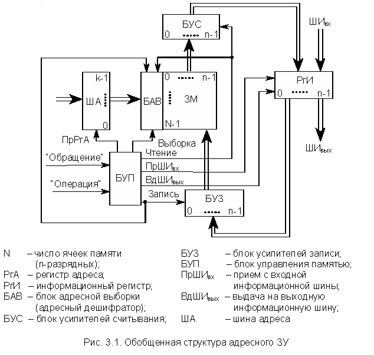
Цикл обращения к памяти инициализируется поступающим в БУП сигналом "Обращение". Общая часть цикла обращения включает в себя прием в РгА с шины адреса (ША) адреса обращения и прием в БУП управляющего сигнала "Операция", указывающего вид запрашиваемой операции (считывание или запись).
Считывание. БАВ дешифрирует адрес и посылает сигнал, выделяющий заданную адресом ячейку ЗМ. В общем случае БАВ может также посылать в выделенную ячейку памяти сигналы, настраивающие ЗЭ ячейки на запись или считывание. После этого записанное в ячейку слово считывается усилителями БУС и передается в РгИ. Затем в памяти с разрушающим считыванием происходит регенерация информации путем записи слова из РгИ через БУЗ в ту же ячейку ЗМ. Операция считывания завершается выдачей слова из РгИ на выходную информационную шину ШИвых.
Запись. Помимо указанной выше общей части цикла обращения происходит прием записываемого слова с входной шины ШИвх в РгИ. Сама запись в общем случае состоит из двух операций – очистки ячейки и собственно записи. Для этого БАВ сначала производит выборку и очистку ячейки, заданной адресом в РгА. Очистка ячейки ЗМ (приведение в исходное состояние) может осуществляться по-разному. В частности, в памяти с разрушающим считыванием очистку можно производить сигналом считывания слова в ячейке при блокировке БУС (чтобы в РгИ не поступила информация). Затем в выбранную ячейку записывается новое слово.
>Необходимость в операции очистки ячейки перед записью, так же как и в операции регенерации информации при считывании, определяется типом используемых ЗЭ, способами управления, особенностями электронной структуры БИС памяти, поэтому в полупроводниковых памятях эти операции могут отсутствовать.
БУП генерирует необходимые последовательности управляющих сигналов, инициирующих работу отдельных узлов памяти. Следует иметь в виду, что БУП может быть весьма сложным устройством (своеобразным управляющим контроллером, имеющим собственную кэш-память), придающим БИСу памяти в целом специальные потребительские свойства, такие как многопортовость, конвейерная выдача информации и т.п.
В памяти этого типа поиск информации происходит не по адресу, а по ее содержанию. Под содержанием информации в данном случае понимается не смысловая нагрузка лежащего на хранении в ячейке памяти слова, а содержание ЗЭ ячейки памяти, т.е. побитовый состав записанного двоичного слова. При этом ассоциативный запрос (признак) также представляет собой двоичный код с определенным побитовым составом. Поиск по ассоциативному признаку происходит параллельно во времени для всех ячеек ЗМ и представляет собой операцию сравнения содержимого разрядов регистра признака с содержимым соответствующих разрядов ячеек памяти. Для организации такого поиска все ЗЭ ЗМ снабжены однобитовыми процессорами, поэтому в ряде случаев память такого типа рассматривают как многопроцессорную систему.
Полностью ассоциативная память большого объема является очень дорогостоящим устройством, поэтому для ее удешевления уменьшают число однобитовых процессоров до одного на ячейку памяти. В этом случае сравнение ассоциативного запроса с содержимым ячеек памяти идет последовательно для отдельных разрядов, параллельно во времени для всех ячеек ЗМ.
При очень больших объемах памяти на определенных классах задач ассоциативный поиск существенно ускоряет обработку данных и уменьшает вероятность сбоя в ЭВМ. Кроме того, ассоциативные ЗУ с блоками соответствующих комбинационных схем позволяют выполнить в памяти достаточно сложные логические операции: поиск максимального или минимального числа в массиве, поиск слов, заключенных в определенные границы, сортировку массива и т.д.
Следует отметить, что ассоциативный поиск можно реализовать и в компьютере с обычной адресной памятью, последовательно вызывая записанные в ячейки памяти слова в процессор и сравнивая их с некоторым ассоциативным признаком (шаблоном). Однако при больших объемах памяти на это будет затрачено много времени. При использовании ассоциативной памяти можно, не считывая слов из ОП в процессор, за одно обращение определить количество слов, отвечающих тому или иному ассоциативному запросу. Это позволяет в больших базах данных очень оперативно реализовать запрос типа: сколько жителей области не представило декларацию о доходах и т.п.
В некоторых специализированных ЭВМ ОП или его часть строится таким образом, что позволяет реализовать как ассоциативный, так и адресный поиск информации.
Упрощенная структурная схема ассоциативной памяти, в которой все ЗЭ ЗМ снабжены однобитовыми процессорами, приведена на рис. 3.2.
Первоначально рассмотрим операцию, называющуюся контроль ассоциации<. Эта операция является общей для операции считывания и записи, а также имеет самостоятельное значение.
По входной информационной шине в РгАП поступает n-разрядный ассоциативный запрос, т.е. заполняются разряды от 0 до n-1. Одновременно в РгМ поступает код маски поиска, при этом n-й разряд РгМ устанавливается в 0. Ассоциативный поиск производится лишь для совокупности разрядов РгАП, которым соответствуют 1 в РгМ (незамаскированные разряды РгАП). Для слов, в которых цифры в разрядах совпали с незамаскированными разрядами РгАП, КС устанавливает 1 в соответствующие разряды РгСв и 0 в остальные разряды.
Комбинационная схема формирования результата ассоциативного обращения ФС формирует из слова, образовавшегося в РгСв, как минимум три сигнала:
· a0 – отсутствие в ЗМ слов, удовлетворяющих ассоциативному признаку;
· a1 – наличие одного такого слова;
· a2 – наличие более чем одного слова.
Возможны и другие операции над содержимым РгСв, например подсчет количества единиц, т.е. подсчет слов в памяти, удовлетворяющих ассоциативному запросу, и т.п.
Формирование содержимого РгСв и a0, a1, a2 по содержимому РгАП, РгМ, ЗМ и называется операцией контроля ассоциации.
Считывание. Сначала производится контроль ассоциации по признаку в РгАП.
Затем:
· a0 = 1 – считывание отменяется из-за отсутствия искомой информации;
· a1 = 1 – считывается в РгИ найденное слово, после чего выдается на ШИвых;
· a2 = 1 – считывается слово, имеющее, например, наименьший номер среди ячеек, отмеченных 1 в РгСв, после чего выдается на ШИвых.
Запись. Сначала отыскивается свободная ячейка (полагаем, что в разряде занятости свободной ячейки записан 0). Для этого выполняется контроль ассоциации при РгАП=111...10 и РгМ=000...01, т.е. n-й разряд РгАП устанавливается в 0, а n-й разряд РгМ – в 1. При этом свободная ячейка отмечается 1 в РгСв. Для записи выбирают свободную ячейку, например, с наименьшим номером. В нее записывается слово, поступившее с ШИвх в РгИ.
Следует отметить, что на данной схеме не изображены блоки БУП, БУС, БУЗ, которые есть в реальных устройствах. Кроме того, для построения ассоциативной памяти требуются запоминающие элементы, допускающие считывание без разрушения.
Стековая память (магазинная)
Стековая память, так же как и ассоциативная, является безадресной. Стековая память может быть организована как аппаратно, так и на обычном массиве адресной памяти.
В случае аппаратной реализации ячейки стековой памяти образуют одномерный массив, в котором соседние ячейки связаны друг с другом разрядными цепями передачи слов (рис. 3.3). При этом возможны два типа устройств (а, б), принципы функционирования которых различны. Рассмотрим первоначально структуру на рис. 3.3, а.
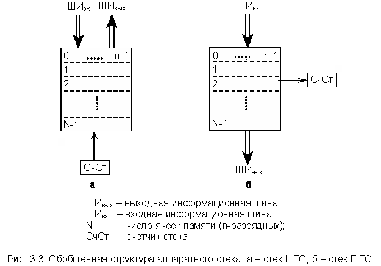
Запись нового слова, поступившего с ШИвх, производится в верхнюю (нулевую) ячейку, при этом все ранее записанные слова (включая слово в ячейке 0) сдвигаются вниз, в соседние ячейки, номера которых на единицу больше. Считывание возможно только из верхней (нулевой) ячейки памяти. Основной режим – это считывание с удалением. При этом все остальные слова в памяти сдвигаются вверх, в соседние ячейки с меньшими номерами. В такой памяти реализуется правило: последний пришел – первый ушел. Стеки подобного типа принято называть стеками LIFO (Last In – First Out).
В ряде случаев устройства стековой памяти предусматривают также операцию простого считывания слова из ячейки 0 без его удаления и сдвига остальных слов. При использовании стека для запоминания параметров инициализации контроллеров каких-либо устройств ЭВМ обычно предусматривается возможность считывания содержимого любой ячейки стека без его удаления, т.е. считывание содержимого не только ячейки 0.
О первом слове, посылаемом в стек, говорят, что оно располагается на дне стека. О последнем посланном (по времени) в стек слове говорят, что оно находится в вершине стека. Таким образом, ячейка N-1 – дно стека, а ячейка 0 – вершина.
Обычно аппаратный стек снабжается счетчиком стека СчСт, показывающим общее количество занесенных в память слов (СчСт = 0 – стек пустой). При заполнении стека полностью он запрещает дальнейшие операции записи.
Стековый принцип организации памяти можно реализовать не только в специально предназначенных для этого устройствах. Стековая организация данных возможна и на обычной адресной памяти с произвольным обращением (программный стек). Для организации стека LIFO в этом случае необходима еще одна ячейка памяти (регистр), в которой всегда хранится адрес вершины стека и которая называется указателем стека. Обычно в качестве указателя стека используют один из внутренних регистров процессора. Кроме этого, требуется соответствующее программное обеспечение. Принципы стековой организации данных на обычной адресной памяти иллюстрируются схемой на рис. 3.4.
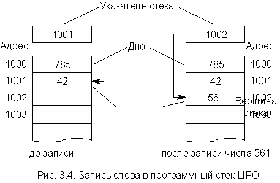
В отличие от аппаратного стека данные, размещенные в программном стеке, при записи нового числа или считывании не перемещаются. Запись каждого нового слова осуществляется в ячейку памяти, следующую по порядку за той, адрес которой содержится в указателе стека. После записи нового слова содержимое указателя стека увеличивается на единицу (см. рис. 3.4). Таким образом, в программном стеке перемещаются не данные, а вершина стека. При считывании слова из стека происходит обратный процесс. Слово считывается из ячейки, адрес которой находится в указателе стека, после чего содержимое указателя стека уменьшается на единицу.
Если вновь загружаемые в стек слова размещаются в ячейках памяти с последовательно увеличивающимися адресами, стек называют прямым. Если адреса последовательно убывают, то – перевернутым. В большинстве случаев используется перевернутый стек, что связано с особенностями аппаратной реализации счетчиков внутри процессора.
Чем удобна такая форма организации памяти? Забегая вперед, можно отметить, что любая команда, выполняемая в процессоре, в общем случае должна содержать код операции (КОП), адрес первого и второго операндов и адрес занесения результата. Для экономии памяти и сокращения времени выполнения машинной команды процессором желательно уменьшить длину команды. Пределом такого уменьшения является длина безадресной команды, т.е. просто КОП. Именно такие команды оказываются возможными при стековой организации памяти, так как при правильном расположении операндов в стеке достаточно последовательно их извлекать и выполнять над ними соответствующие операции.
Помимо рассмотренной выше стековой памяти типа LIFO в ЭВМ используются стековые памяти другого типа, реализующие правило: первый пришел – первый ушел. Стеки подобного типа принято называть стеками FIFO (First In – First Out). Такая стековая память широко используется для организации различного рода очередей (команд, данных, запросов и т.д.). Обобщенная структура аппаратного стека типа FIFO представлена на рис. 3.3, б.
Как и в предыдущем случае, ячейки стековой памяти образуют одномерный массив, в котором соседние ячейки связаны друг с другом разрядными цепями передачи слов. Запись нового слова, поступившего с ШИвх, осуществляется в верхнюю (нулевую) ячейку, после чего оно сразу перемещается вниз и записывается в последнюю по счету незаполненную ячейку. Если стек перед записью был пустой, слово сразу попадает в ячейку с номером N-1, т.е. на дно стека. Считывание возможно только из нижней ячейки с номером N-1 (дно стека). Основной режим – это считывание с удалением. При этом все последующие (записанные) слова сдвигаются вниз, в соседние ячейки, номера которых на единицу больше. При заполнении стека счетчик (СчСт) запрещает дальнейшие операции записи в стек.
Таким образом, в отличие от стека LIFO, в стеке FIFO перемещается не дно, а вершина. Записываемые в стек FIFO слова постепенно продвигаются от вершины ко дну, откуда и считываются по мере необходимости, причем темп записи и считывания определяются внешними управляющими сигналами и не связаны друг с другом.
Программная реализация стека FIFO в настоящем разделе не рассматривается, поскольку на практике используется достаточно редко.
Адресные ЗУ наиболее широко используются в современных ЭВМ для построения самых разнообразных устройств памяти. В процессе эволюции ЭВМ принципы построения и аппаратная реализация данных ЗУ прошли очень большой путь развития от первых ЗУ на электромагнитных реле до современных БИСов памяти емкостью в сотни Мбайт, которые в качестве ЗЭ используют либо разнообразные триггерные схемы на биполярных полупроводниках, либо МОП-структуры. При этом тип используемых ЗЭ влияет на структуру ЗУ. Кроме того, структура ЗУ во многом определяется особенностями его применения в конкретных устройствах ЭВМ. Все это привело к тому, что в процессе развития возникло весьма большое разнообразие структур ЗУ, которые различаются по способу организации, быстродействию, объему, аппаратурным затратам, стоимости.
Ранее отмечалось, что основной частью любой памяти является запоминающий массив (ЗМ), представляющий собой совокупность ЗЭ, соединенных определенным образом. ЗМ называют еще запоминающей матрицей. Каждый ЗЭ хранит бит информации и должен реализовывать следующие режимы работы:
К ЗЭ должны поступать управляющие сигналы для задания режима работы, а также сигналы при записи. При считывании ЗЭ должен выдавать сигнал о своем состоянии, поэтому любой ЗМ имеет систему адресных и разрядных линий (проводников).
Адресные линии используются для выделения по адресу совокупности ЗЭ, которым устанавливается режим считывания или записи. Число ЗЭ, входящих в эту совокупность, равно ширине выборки. Иными словами, с помощью адресных линий происходит выбор необходимой ячейки памяти. Разрядные линии используются для записи или считывания информации в ЗЭ каждого разряда ячейки памяти.
Адресные и разрядные линии носят общее название линий выборки. В зависимости от числа таких линий, соединенных с одним ЗЭ, различают двух-, трехкоординатные ЗУ и т.д., называемые ЗУ типа 2D, 3D, 2.5D, 2D-M (от слова dimension – размерность), и их разнообразные модификации.
ЗУ типа 2D
Организация ЗУ типа 2D обеспечивает двухкоординатную выборку каждого ЗЭ ячейки памяти. Основу ЗУ составляет плоская матрица из ЗЭ, сгруппированных в 2k ячеек по n разрядов. Обращение к ячейке задается k-разрядным адресом, что дает одну координату. Выделение разрядов производится разрядными линиями записи и считывания, что дает вторую координату. Очень упрощенная структура ЗУ типа 2D представлена на рис. 3.5.
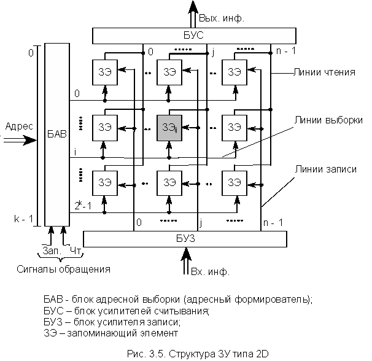
Адрес из k разрядов поступает на блок адресной выборки БАВ (который называют также адресным формирователем), управляемый сигналами Чт и Зап. Основу БАВ составляет дешифратор с 2k выходами, который при поступлении на его вход адреса формирует сигнал для выбора линии i. В зависимости от сигнала Чт или Зап БАВ в общем случае выдает сигнал, настраивающий ЗЭ i-й ячейки (i-й линии) на чтение либо на запись. Выделение разряда j в i-м слове (ЗУ серого цвета) производится второй координатной линией. При записи по линии j от БУЗ поступает сигнал, устанавливающий выбранный для записи ЗЭi,j в состояние 0 или 1. При считывании на БУС по линии j поступает сигнал о состоянии ЗЭi,j.
Следует иметь в виду, что ЗЭ должны допускать объединение выходов для работы на общую линию с передачей сигналов только от выбранного ЗЭ. Это свойство ЗЭ используется во всех современных ЗУ.
Таким образом, каждая адресная линия выборки ячейки памяти в общем случае передает три сигнала:
Однако во многих современных ЗУ достаточно только двух сигналов – выборка и отсутствие выборки.
Каждая разрядная линия записи передает в ЗЭ записываемый бит информации, а разрядная линия считывания – считываемый из ЗЭ бит информации. Линии записи и считывания могут быть объединены в одну при использовании ЗЭ, допускающих соединение выхода со входом записи. В современных ЗУ широко используются совмещенные функции линий считывания и записи.
ЗУ типа 2D являются быстродействующими и достаточно удобными для реализации. Однако такие ЗУ неэкономичны по объему оборудования из-за наличия дешифратора на 2k выходов. В настоящее время структуры типа 2D используются, в основном, в ЗУ небольшой емкости (не более 1 К).
Непрерывное совершенствование элементной базы, а также многообразие вариантов целевого использования ЗУ внутренней памяти ЭВМ привело к созданию большого количества разновидностей ЗЭ. Ниже кратко рассмотрены наиболее характерные типы ЗЭ, используемые в ЗУ универсальных ЭВМ и специализированных цифровых устройств.
Памяти на магнитных (ферритовых) сердечниках с прямоугольной петлей гистерезиса появились в начале 50-х годов и сыграли большую роль в увеличении объемов ОП и производительности ЭВМ. Однако появившиеся ЗУ на дискретных биполярных транзисторах, а в середине 60-х годов первые БИСы памяти малой степени интеграции стремительно вытеснили ЗУ на магнитных сердечниках. В настоящее время ЗУ на магнитных сердечниках используются только в специализированных ЭВМ, работающих в особых условиях. Это связано с тем, что такие ЗУ энергонезависимы, не боятся радиации и сильных температурных перепадов.
ЗЭ на полупроводниковых элементах
Абсолютное большинство ЗУ внутренней памяти современных ЭВМ (а в универсальных ЭВМ общего назначения – 100%) построено на полупроводниковых ЗЭ. По сравнению с другими типами ЗЭ полупроводниковые ЗЭ имеют ряд существенных преимуществ. Основными преимуществами являются большее быстродействие, компактность, меньшая стоимость, совместимость по сигналам с логическими схемами, технологичность. По типу ЗЭ различают биполярные ЗУ с ЗЭ, построенными на биполярных транзисторах (по ТТЛ- или ЭСЛ-схемам), и МОП-ЗУ с ЗЭ, построенными на МОП-структурах.
Оба типа ЗУ широко используются, но имеют свои преимущества и недостатки. Биполярные ЗУ более быстродействующие и хорошо стыкуются с ТТЛ- и ЭСЛ-логикой. Но в настоящее время они еще довольно дороги и используются главным образом в качестве быстродействующих памятей, таких как управляющая память, СОП, кэш. Кроме того, такие ЗУ потребляют много энергии и имеют невысокую плотность упаковки элементов в кристалле. Запоминание информации в биполярных ЗУ происходит в триггерных ячейках, построенных на многоэмиттерных транзисторах. Это статические ЗУ, поскольку при включенном питании информация хранится в них любое время без регенерации.
МОП-ЗУ бывают как статическими, так и динамическими. В первом случае они построены на ЗЭ в виде триггеров. Во втором случае хранение информации основано на заряде "запоминающих емкостей", в качестве которых используются емкости некоторых цепей схемы. Это либо паразитная емкость затвора МОП-транзистора, либо специально сформированная емкость сток МОП-транзистора – подложка. Поскольку указанные емкости имеют ток утечки, то информацию в таких ЗУ необходимо регенерировать примерно через каждые 2 мс (операция называется рефреш). МОП-ЗУ сравнительно дешевы, потребляют мало энергии, имеют очень высокую плотность элементов на кристалле и, следовательно, большие емкости ЗУ в одном корпусе микросхемы. В настоящее время МОП-ЗУ широко используются для построения основной (оперативной) памяти ЭВМ различных классов. МОП-ЗУ менее быстродействующие, чем биполярные ЗУ.
Рассмотрим более подробно структуру полупроводникового ЗЭ на биполярных транзисторах и ЗЭ на МОП-структурах, в котором информация сохраняется в паразитной емкости затвора.
Биполярный ЗЭ
Простейший вариант биполярного ЗЭ представляет собой триггер на двух многоэмиттерных транзисторах с непосредственными связями, структура которого приведена на рис. 3.6. Запоминающие устройства на ЗЭ такого типа строятся по схеме 3D.
Эмиттеры 11 и 21 являются парафазными информационными входами ЗЭ и служат для записи в триггер 1 или 0. Эти же эмиттеры используются как выходы при считывании информации. Адресные эмиттеры 12, 22, 13, 23 образуют два конъюнктивно связанных входа выборки.
В режиме хранения (ЗЭ не выбран) эмиттерный ток открытого транзистора замыкается на землю через адресные эмиттеры и адресные линии (по крайней мере, через одну из линий), находящиеся под потенциалом логического 0 (£ 0.4 В). На входы усилителей записи подается такой уровень сигнала, чтобы на выходах невозбужденных усилителей записи напряжение было порядка 1-1.5 В, т.е. больше максимального уровня логического нуля (0.4 В) и меньше минимального уровня логической единицы (2.4 В). Это напряжение (1-1.5 В) подается на информационные эмиттеры, и они заперты.
При выборке данного ЗЭ на его адресные эмиттеры с выходов адресных дешифраторов поступает потенциал логической 1 (≥ 2.4 В), превышающий потенциал информационных эмиттеров. Поэтому адресные эмиттеры оказываются запертыми, а коллекторный ток открытого транзистора течет через информационный эмиттер, чем обеспечивает возможность считывания и записи в него информации. Состояние ЗЭ распознается по наличию тока соответственно в разрядной линии 0 (открытый Т1) или в разрядной линии 1 (открытый T2). Считывание происходит без разрушения информации и может быть многократным.
Хранимая в ЗЭ информация доступна для считывания все время, пока ЗЭ находится в выбранном состоянии (на обеих адресных линиях выставлена логическая единица) и в него не проводится запись. Поскольку Rвых открытого усилителя записи очень мало и шунтирует вход усилителя считывания (в него ответвляется большая часть тока считывания), в режиме считывания выходные каскады усилителя записи переводят в Z-состояние. Его Rвых при этом резко повышается, причем , т.е. весь ток информационного эмиттера протекает через усилитель считывания. Таким образом, на выходах усилителей считывания появится соответствующий состоянию выбранного ЗЭ парафазный сигнал.
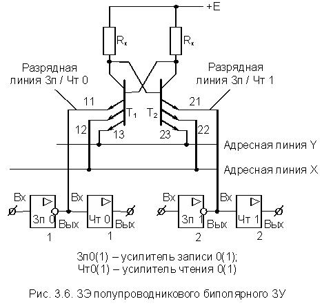
В режиме записи на входы усилителей записи синхронно с импульсами выборки подаются парафазные сигналы соответствующего символа (0 или 1). Так, для записи 1 в ЗЭ необходимо подать на вход левого усилителя записи (Зп0) 0, а на вход правого усилителя записи (Зп1) – 1. Для записи в ЗЭ нуля – все наоборот.
Пример 1
В ЗЭ записан 0, т.е. T2 заперт, T1 открыт. Происходит запись в ЗЭ единицы. С учетом инверсии в усилителе записи на эмиттер 21 попадает низкий уровень, а на эмиттер 11 – высокий. В результате T1 закрывается, T2 – открывается и ЗЭ переходит в состояние 1.
Пример 2
В ЗЭ записан 0, т.е. T2 заперт, T1 открыт. Происходит запись в ЗЭ ноля, т.е. на вход левого усилителя записи (Зп0) подается 1, а на вход правого (Зп1) – 0. В результате на эмиттер 21 попадает высокий уровень, а на эмиттер 11 – низкий. При этом состояния T1 и T2 не изменяются.
Интегральная микросхема биполярного ЗУ представляет собой кристалл кремния, в котором образован массив ЗЭ (триггеров) со всеми межсоединениями, а также адресные дешифраторы, усилители-формирователи записи и считывания и другие схемы управления адресной выборкой, записью и считыванием. Для повышения быстродействия ЗУ эти схемы могут быть выполнены на основе ЭСЛ-элементов, работающих в линейном режиме, в то время как построенные на основе ТТЛ-элементов триггеры ЗЭ работают с насыщением. В таком случае кристалл содержит схемы согласования уровней сигналов от схем ТТЛ к схемам ЭСЛ и обратно.
МОП-ЗЭ
Структура ЗЭ динамического МОП-ЗУ приведена на рис. 3.7. Запоминающее устройство такого типа строится по схеме 2D-M.
Как уже отмечалось, в ЗУ типа 2D-M адрес ячейки i делится на две части i¢ и i², которые соответственно поступают на БАВ и РАдрК. Запоминающей емкостью служит паразитная емкость С затвора транзистора Т2. Линия разрядно-адресного коммутатора i² используется для ввода в ЗЭ бита информации при записи и съема его при считывании. Поскольку ЗЭ использует источник питания только при считывании, то им может служить паразитная емкость Сi² линии i².
Предварительно перед считыванием от РАдрК подается сигнал R, с помощью которого подготавливается считывание с мультиплексированием для ЗЭ, выбираемых линией i¢. Сигнал R открывает транзистор Т4, и емкость Сi² подзаряжается от источника +E. Затем на линию i¢ подается от БАВ сигнал считывания – промежуточный уровень сигнала CWR (Control write/read), который открывает транзистор Т3, но не может открыть Т1. Пусть емкость С заряжена (т.е. хранит 1) и транзистор T2 открыт. В этом случае через открытые транзисторы Т3 и Т2 конденсатор Сi² разряжается и низкий уровень (уровень 0) сигнала D на линии i² указывает, что ЗЭ хранил инверсное значение, т.е. 1. Если ЗЭ хранит 0, то емкость С разрежена, Т2 закрыт и сигнал CWR не может вызвать разряд емкости Сi². Высокий уровень сигнала D (уровень 1) указывает, что ЗЭ хранил 0. Далее сигнал D через разрядно-адресный коммутатор поступает на выход ЗУ.
При записи на линию i² поступает сигнал D, соответствующий записываемому двоичному символу. Затем на линию i¢ подается высокий уровень сигнала CWR, открывающий транзистор Т1, который подключает к линии i² конденсатор С. В результате независимо от своего предыдущего состояния емкость оказывается заряженной, если записывается 1, и разряженной, если записывается 0.
Следует отметить, что ЗЭ динамических ЗУ имеют разную сложность и количество используемых транзисторов. В настоящее время наиболее часто используются ЗЭ, построенные на одном транзисторе.
Независимо от типа ЗЭ динамические ЗУ требуют периодической регенерации. Первоначально операциями регенерации памяти занимался процессор. Однако по мере развития элементной базы ЭВМ функции регенерации памяти стали выполняться на более низком уровне. Для регенерации стали использовать один из каналов контроллера прямого доступа к памяти, а затем только контроллер памяти. В настоящее время схемы регенерации во многих случаях располагаются непосредственно в самом кристалле памяти, и от разработчика не требуется специальных мер по организации этого процесса. Такие ЗУ часто называют квазистатическими. Между тем процесс регенерации информации в отдельных БИС памяти все равно требует некоторой синхронизации. Эта задача в ЭВМ различной архитектуры решается по-разному, в частности в IBM PC контроль над процессом регенерации памяти включен в функции чипсета (см. п. 10).
Постоянные ЗУ в рабочем режиме ЭВМ допускают только считывание хранимой информации. В зависимости от типа ПЗУ занесение в него информации производится или в процессе изготовления, или в эксплуатационных условиях путем настройки, предваряющей использование ПЗУ в вычислительном процессе. В последнем случае ПЗУ называются постоянными запоминающими устройствами с изменяемым в процессе эксплуатации содержимым или программируемыми постоянными запоминающими устройствами (ППЗУ).
Постоянные ЗУ обычно строятся как адресные. Функционирование ПЗУ можно рассматривать как выполнение однозначного преобразования k-разрядного кода адреса ячейки запоминающего массива ЗМ в n-разрядный код хранящегося в ней слова.
По сравнению с ЗУ с произвольным обращением, допускающим как считывание, так и запись информации, конструкции ПЗУ значительно проще, их быстродействие и надежность выше, а стоимость ниже. Это объясняется большей простотой ЗЭ, отсутствием цепей для записи вообще или, по крайней мере, для оперативной записи, реализацией неразрушающего считывания, исключающего процедуру регенерации информации.
Одним из важнейших применений ПЗУ является хранение микропрограмм в микропрограммных управляющих устройствах ЭВМ. Для этой цели необходимы ПЗУ значительно большего, чем в ОП, быстродействия и умеренной емкости (10 000 - 100 000 бит).
Постоянные ЗУ широко используются для хранения программ в специализированных ЭВМ, в том числе в микроЭВМ, предназначенных для решения определенного набора задач, для которых имеются отработанные алгоритмы и программы, например в бортовых ЭВМ самолетов, ракет, космических кораблей, в управляющих вычислительных комплексах, работающих в АСУ технологических процессов. Такое применение ПЗУ позволяет существенно снизить требования к емкости ОП, повысить надежность и уменьшить стоимость вычислительной установки.
Очень широко ПЗУ используются в универсальных ЭВМ всех классов для хранения стандартных процедур начальной инициализации вычислительной системы и внешних устройств, например BIOS в PC фирмы IBM. Программное обеспечение контроллеров интеллектуальных внешних устройств ЭВМ обычно также хранится во встроенных ПЗУ.
На рис. 3.8 приведена схема простейшего ПЗУ со структурой типа 2D. Запоминающий массив образуется системой взаимно перпендикулярных линий, в пересечениях которых устанавливаются ЗЭ, которые либо связывают (состояние 1), либо не связывают (состояние 0) между собой соответствующие горизонтальную и вертикальную линии. Поэтому часто ЗЭ в ПЗУ называют связывающими элементами. Для некоторых типов ЗЭ состояние 0 означает просто отсутствие запоминающего (связывающего) элемента в данной позиции ЗМ.
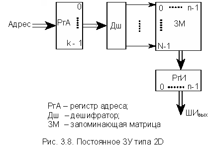
Дешифратор ДШ по коду адреса в РгА выбирает одну из горизонтальных линий (одну из ячеек ЗМ), в которую подается сигнал выборки. Выходной сигнал (сигнал 1) появляется на тех вертикальных разрядных линиях, которые имеют связь с возбужденной адресной линией. В зависимости от типа запоминающих (связывающих) элементов различают резисторные, емкостные, индуктивные (трансформаторные), полупроводниковые (интегральные) и другие ПЗУ.
В настоящее время наиболее распространенным типом являются полупроводниковые интегральные ПЗУ.
Полупроводниковые интегральные ПЗУ имеют все те же достоинства, что и полупроводниковые ЗУ с произвольным обращением. Более того, в отличие от последних они являются энергонезависимыми. Постоянные ЗУ имеют большую емкость на одном кристалле (в одном корпусе интегральной микросхемы). Положительным свойством интегральных ПЗУ является то, что некоторые типы этих устройств позволяют самому потребителю производить их программирование (занесение информации) в условиях эксплуатации и даже многократное перепрограммирование.
По типу ЗЭ, устанавливающих или разрывающих связь (контакт) между горизонтальными и вертикальными линиями, различают биполярные и МОП-схемы ПЗУ. Биполярные ПЗУ имеют время выборки 3-5 нс. Постоянные ЗУ на МОП-схемах имеют большую емкость в одном кристалле (корпусе), но и меньшее быстродействие: время выборки 10-15 нс.
По важнейшему признаку – способу занесения информации (программированию) различают три типа интегральных полупроводниковых ПЗУ:
Программируемые фотошаблонами и выжиганием ПЗУ могут строиться на основе как биполярных, так и МОП-схем. Перепрограммируемые ПЗУ используют только МОП-схемы, способные хранить заряды.
Флэш-память (flash-memory) по типу запоминающих элементов и основным принципам работы подобна памяти типа EEPROM (ППЗУ) с электрическим перепрограммированием. Однако ряд архитектурных и структурных особенностей позволяют выделить ее в отдельный класс. Разработка флэш-памяти считается кульминацией развития схемотехники памяти с электрическим стиранием информации, и стала возможной только после создания технологий сверхтонких пленок. Время электрического перепрограммирования флэш-памяти в отличие от существующих ППЗУ очень мало и составляет сотни наносекунд. Это позволяет использовать их в качестве оперативных внешних запоминающих устройств типа жесткого диска. Однако число циклов перезаписи флэш-памяти ограничено.
В схемах флэш-памяти не предусмотрено стирание отдельных слов, стирание информации осуществляется либо для всей памяти одновременно, либо для достаточно больших блоков. Это позволяет упростить схемы ЗУ, т. е. способствует достижению высокого уровня интеграции и быстродействия при снижении стоимости. Технологически схемы флэш-памяти выполняются с высоким качеством и обладают очень хорошими параметрами.
Термин flash, по одной из версий, связан с характерной особенностью этого вида памяти – возможностью одновременного стирания всего ее объема. Согласно этой версии еще до появления флэш-памяти при хранении секретных данных использовались устройства, которые при попытках несанкционированного доступа к ним автоматически стирали хранимую информацию и назывались устройствами типа flash (вспышка, мгновение). Это название перешло и к памяти, обладавшей свойством быстрого стирания всего массива данных одним сигналом.
Одновременное стирание всей информации ЗУ реализуется наиболее просто, но имеет тот недостаток, что даже замена одного слова в ЗУ требует стирания и новой записи для всего ЗУ в целом. Для многих применений это неудобно, поэтому наряду со схемами с одновременным стиранием всего содержимого имеются схемы с блочной структурой, в которых весь массив памяти делится на блоки, стираемые независимо друг от друга. Объем таких блоков сильно разнится: от 256 байт до 128 Кбайт.
Число циклов перепрограммирования для флэш-памяти хотя и велико, но ограничено, т.е. ячейки при перезаписи "изнашиваются". Для того чтобы увеличить долговечность памяти, в ее работе используются специальные алгоритмы, способствующие "разравниванию" числа перезаписей по всем блокам микросхемы.
Соответственно областям применения флэш-память имеет архитектурные и схемотехнические разновидности. Двумя основными направлениями эффективного использования флэш-памяти являются хранение не очень часто изменяемых данных (обновляемых программ, в частности) и замена памяти на магнитных дисках.
Для первого направления, в связи с редким обновлением содержимого, параметры циклов стирания и записи не столь существенны, как информационная емкость и скорость считывания информации. Стирание в этих схемах может быть как одновременным для всей памяти, так и блочным. Среди устройств с блочным стиранием выделяют схемы со специализированными блоками – несимметричные блочные структуры – по имени так называемых boot-блоков, в которых информация надежно защищена аппаратными средствами от случайного стирания. Эти ЗУ называют boot block flash memory. Boot-блоки хранят программы инициализации системы, позволяющие ввести ее в рабочее состояние после включения питания.
Микросхемы для замены жестких магнитных дисков (flash-file memory) содержат более развитые средства перезаписи информации и имеют идентичные блоки (симметричные блочные структуры). Накопители подобного типа широко используются фирмой Intel. Имеются мнения о конкурентоспособности этих накопителей в применениях, связанных с заменой жестких магнитных дисков для ЭВМ различных типов.
В заключение следует отметить, что в настоящем разделе рассмотрены только основные типы ЗУ и ЗЭ, которые далеко не исчерпывают все разнообразие современной элементной базы устройств памяти ЭВМ.